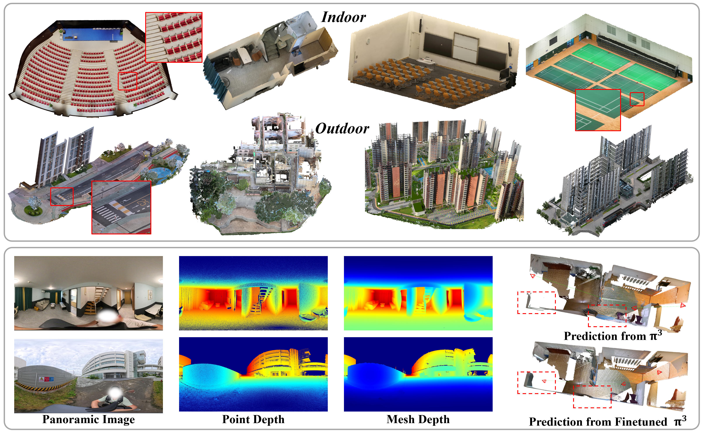

EventVGGT: Exploring Cross-Modal Distillation for Consistent Event-based Depth Estimation
Yinrui Ren*,
Jinjing Zhu*,
Kanghao Chen*,
Zhuoxiao Li*,
Jing Ou,
Zidong Cao,
Tongyan Hua,
Peilun Shi,
Yingchun Fu,
Hui Xiong,
Wufan Zhao.
ECCV 2026 /
Paper /
Project
EventVGGT is an annotation-free framework that distills spatio-temporal priors from VGGT for temporally consistent event-based depth estimation.

Sat2City: 3D City Generation from A Single Satellite Image with Cascaded Latent Diffusion
Jing Ou*,
Zidong Cao*,
Yinrui Ren
Zhuoxiao Li,
Jinjing Zhu,
Tongyan Hua,
Shuai Zhang,
Hui Xiong,
Wufan Zhao.
ECCV 2026 /
Paper /
Project
We present Holo360D, a dataset of 109,495 panoramas with registered point clouds, meshes, and camera poses. It is the first large-scale dataset providing continuous panoramic sequences with accurate, high-completeness depth maps.